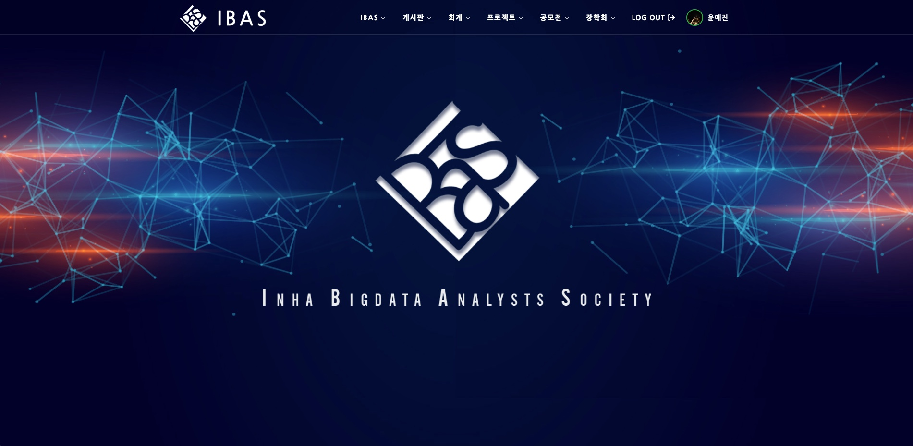
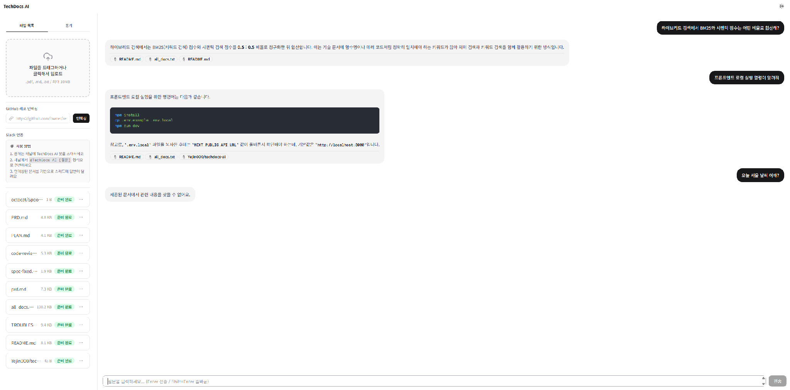
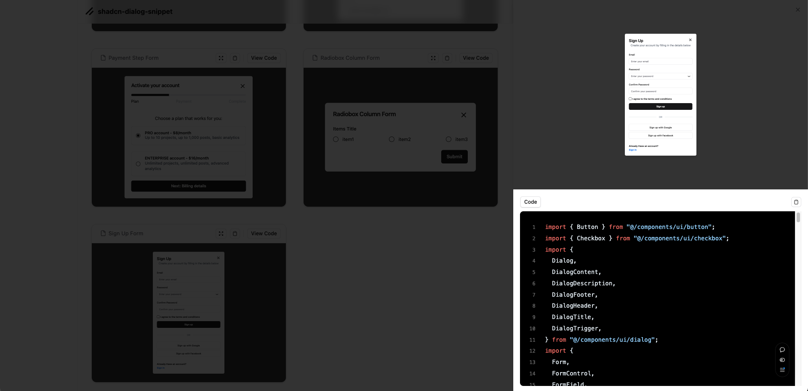
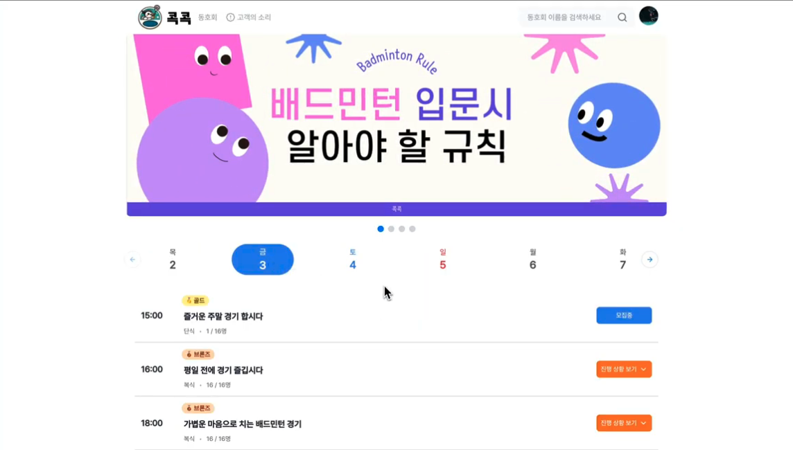
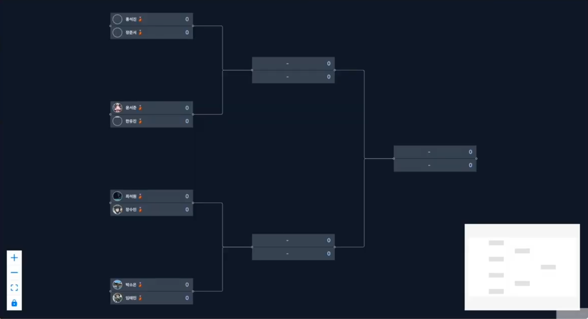

AutoEverAPPLICATION
PORTFOLIO
윤예진
YUN YEJIN
현대오토에버 | 웹개발자(AI 서비스) 지원
더 나은 서비스를 위해,
불편부터 개선했습니다.
운영과 개발의 불편을 기술로 개선해 온 지원자입니다.
OVERVIEW
프로젝트 한눈에 보기
4개의 프로젝트에서 운영, 전환, AI 검색, 자동화 문제를 각각 해결했습니다.

IBAS LMS
동아리 운영 통합
3주 → 3~4일React · TypeScript PROJECT 02
TechDocs AI
RAG 검색 설계·검증
42문서 · 126청크FastAPI · LangChain PROJECT 03
shadcn-dialog-snippet
개발 작업 자동화
검증 3회 → 0회Vite Plugin · Mixpanel PROJECT 04
콕콕
점수 입력 UX
300ms debounceNext.js · TanStack Query프로젝트별 상세 페이지에서 문제 → 판단 → 구현 → 결과 순으로 설명합니다.
PROJECT 01 IBAS LMS
분산 운영 통합
여러 플랫폼에 나누어 관리하던 동아리 운영 정보를 전용 LMS로 통합했습니다.
여러 플랫폼에서 각각 관리
회원 정보 · 권한 · 스터디 운영 정보를 운영진이 직접 확인하고 정리
IBAS LMS에서 통합 관리
회원 · 스터디 · 게시판 · 운영 기능을 하나의 서비스 안에서 처리
RESULT
실제 IBAS LMS 화면
FUNCTIONS 회원 관리 · 스터디 운영 · 게시판 · 회계/운영 기능
PROJECT 01 IBAS LMS
React 전환과 권한 재설계
운영 중인 서비스를 유지하면서 화면 구조를 재설계하고, 역할 기준으로 접근 제어를 단순화했습니다.
Django Template 기반
화면과 UI 로직이 서버 구조와 강하게 결합. 작은 수정도 여러 파일에 영향.
React + TypeScript
API 기반 구조로 분리. 컴포넌트 · 상태 · 라우팅 기준으로 재구성.
TECHNICAL CONSIDERATIONS
IBAS LMS 실제 화면
TECH React · TypeScript · Recoil · React Router
PROJECT 02 TechDocs AI
검색 구조 설계
기술 문서와 GitHub 저장소를 검색하고, 답변의 근거까지 확인할 수 있는 RAG 서비스를 설계했습니다.
문서와 저장소를 검색 가능한 지식으로
PDF · MD · TXT · GitHub → Chunking → Embedding → ChromaDB
Hybrid Search로 후보를 찾고 Source 제공
BM25 + Semantic → 0.5 : 0.5 → LLM → Answer + Source
TECHNICAL CONSIDERATIONS
실제 TechDocs AI 화면 · 파일 업로드 · GitHub 인덱싱 · Slack 안내
TECH Next.js · FastAPI · LangChain · ChromaDB
PROJECT 02 TechDocs AI
검색 품질 검증
정답 문서를 미리 지정한 질문으로 실제 검색 코드를 실행해 검색 결과 순위를 측정했습니다.
Hit Rate 비교
Hybrid가 모든 지표에서 우세하지 않아, 우열보다 기준선 확보에 의미를 두었습니다.
HOW I MEASURED
PROJECT 03 shadcn-dialog-snippet
반복 검증 자동화
실행 화면과 사용자에게 제공하는 코드가 달라지는 문제를 Vite Plugin으로 자동화했습니다.
수동 변환 + 반복 확인
TSX 수정 후 코드 문자열 재생성. 실행 화면과 제공 코드를 반복 검증.
Vite Plugin 자동화
buildStart에서 최초 전체 변환. handleHotUpdate에서 변경 파일만 처리.
TECHNICAL CONSIDERATIONS
Dialog 실행 화면 + 사용자 제공 코드
PRODUCT DATA Mixpanel로 기능 클릭 이벤트를 수집할 수 있는 기반 마련 GitHub ↗
PROJECT 04 콕콕
점수 입력 최적화
서버 응답을 기다리지 않고 즉시 반응하며, 연속 입력의 서버 요청을 줄였습니다.
SCORE UPDATE
TECHNICAL CONSIDERATIONS
콕콕 경기 일정 화면

ROLE Frontend 1인 개발 · Next.js · TanStack Query GitHub ↗
YUN YEJIN
개발 기준
프로젝트를 진행하며 반복해서 적용한 세 가지 기준입니다.
실제 운영을 기준으로
기능 구현에서 끝나지 않고,
실제 사용 환경과 운영 상황까지 고려합니다.
콕콕 · 로컬 즉시 반영 · 300ms debounce
기술 선택은 검증으로
요구사항에 맞는 방법을 선택하고,
직접 실험하고 측정해 판단합니다.
25개 질문 평가
반복 작업은 자동화로
개발 과정에서 반복되는 작업도 개선 대상으로 보고,
도구와 시스템으로 해결합니다.
수동 검증 3회 → 0회